Enterprise Objects Framework Release 1.1 Copyright ©1995 by NeXT Computer, Inc. All Rights Reserved.
Entity-Relationship Modeling
| A database server stores data in the structures that it defines: A relational database uses tables to store data, an object-oriented database uses objects, a file system uses files, and so on. The Enterprise Objects Framework uses the terminology of Entity-Relationship modeling (or E-R modeling) to describe a server's data structures in a way that allows those data structures to be mapped to enterprise objects.
Entity-Relationship modeling isn't unique to the Enterprise Objects Framework; it's a popular discipline with a set of rules and terms that are documented in database literature. The Enterprise Objects Framework uses a modified version of the traditional rules of E-R modeling. When your data store is a relational database, you can use the EOModeler application to specify the mapping between the database data and your enterprise objects. The model file you produce using EOModeler describes the server's data structures in terms that the Enterprise Objects Framework can understand. Note that if you're working with a data store other than a database, you must create your own data structures to map the server's data to your enterprise objects. This chapter presents the E-R terms and concepts as they are used by the Framework. See Chapter 5, "Using EOModeler" for instructions on putting these concepts into practice. |
| Modeling Objects |
| In an Entity-Relationship model, distinguishable things are known as entities, each entity is defined by its component attributes, and the affiliations, or relationships, between entities are identified (together, attributes and relationships are known as properties). From these three simple modeling objects, arbitrarily complex systems can be modeled. For instance, a company's customer base, a library of books, or a network of computers can all be depicted as E-R models. If the parts of a system can be identified, the system can be expressed as an E-R model.
Pure Entity-Relationship modeling is independent of native database architecture. Theoretically, an E-R model can be implemented as a relational database, an object-oriented database, a file system, or any other data storage system. In practice, E-R modeling fits most naturally with relational databases; in other words, with databases that store data in two-dimensional tables. The examples and illustrations in this chapter follow this lead by posing a hypothetical relational database server from which data is drawn. |
| Entities and Attributes |
| Entities and attributes represent structures that contain data. In a relational database, entities represent tables; an entity's attributes represent the table's columns. A sample table that could be represented by an Employee entity is shown below: |
| 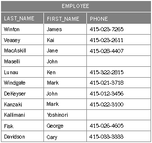 |
| Figure 56. The "EMPLOYEE" Table
Each row in the table can be thought of as an "instance of an entity." Thus, an employee record is called an instance of the Employee entity. In the Enterprise Objects Framework, each instance of an entity typically maps to one enterprise object. Contained within an entity is a list of features, or attributes, of the thing that's being modeled. The Employee entity would contain attributes such as the employee's last name, first name, phone number, and so on. This simple model is depicted in Figure 57. |
| 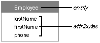 |
| Figure 57. The Employee Entity
In traditional E-R modeling, each entity represents all or part of one database table. The Enterprise Objects Framework allows you to go beyond this, however, by adding attributes to an entity that actually reflect data in other, related tables (the process of adding attributes from other entities is known as flattening). An entity in the Framework is analogous to a database view; in a sense it's a virtual table that maps to one or more real database tables. Entities can also have derived attributes, which do not correspond directly to any of the columns in a database table. Frequently, these are computed from one or more attributes. For instance, a derived attribute could be used to automatically compute an employee's annual salary by multiplying his monthly salary (obtained from a simple monthly salary attribute) by twelve. Enterprise objects are based on entities. Typically, each of an entity's properties are represented in the enterprise object as instance variables (although this is not a requirement). Enterprise objects can have instance variables that do not correspond to any of the entity's properties.
Names and the Data Dictionary The table and column names shown in Figure 57 are the names that a hypothetical server might use. The collection of a server's table and column names is called its data dictionary. In your application, you can't refer directly to items in the server's data dictionary. To identify the server's "EMPLOYEE" table, for example, you must refer to the entity that represents the table--in other words, the Employee entity. The correspondence between the server's names and the names of the modeling objects that you create isn't coincidental; you have to tell each modeling object which data dictionary name it represents. This is done as you create the model. Server names (in other words, names in a server's data dictionary) are, typically, case-insensitive. The names of modeling objects, on the other hand, are case-sensitive. Throughout this chapter (and the rest of this manual) modeling objects are given names that match, except for case, the corresponding dictionary names (given the hypothetical relational database server that's used in the examples). To further distinguish the two, server names are uppercase and quoted--for example, the "EMPLOYEE" table--while modeling object names use a different font: AnEntity, anAttribute, aRelationship. Note that entity names are capitalized like Objective C class names, while attribute and relationship names are lowercase with intervening capital letters. Attributes are occasionally identified by their definition, with the entity and attribute names connected by a period: AnEntity.anAttribute.
Attribute Data When you use an attribute to identify a particular datum in a table, you refer to the value for that attribute, given a particular record. An employee's phone number, for example, is the value for the Employee.phone attribute. The "value for an attribute" construction enforces the notion that the attribute itself doesn't contain data. Not every employee will necessarily have a phone number. If a record's value for a particular attribute can't be determined (or doesn't exist), the value is said to be NULL.
Data Types Every database attribute is assigned a data type (such as int, char *, and so on). All values for a particular attribute take the data type of that attribute. In other words, the values in a particular column are all of the same type. When an enterprise object is fetched from the database, the value for each attribute is converted from its external data type into a suitable scalar or value class type that can be used by the enterprise object. For example, a Sybase varchar would become an NSString in an enterprise object. None of the candidate data types allow lists of data; the value for a particular attribute in a particular record must be a single datum. Thus, in addition to indicating that an employee has a last name, a first name, and a phone number, the diagram in Figure 57 indicates that every employee has a single last name, a single first name, and a single phone number (where any of these single values can be NULL). This "atomic attribute rule" will become particularly important in the discussion of relationships, later in this chapter.
Attribute Types An attribute may be simple, derived, or flattened. A simple attribute corresponds to a single column in the database, and may be read or updated directly from or to the database. A derived attribute doesn't correspond to a single database column and is usually based on some other attribute, which is modified in some way. For example, if an Employee entity has a simple monthly salary attribute, you could define a derived annualSalary attribute as "salary * 12". Derived attributes, since they don't correspond to real values in the database, are effectively read-only; it makes no sense to write a derived value. A flattened attribute (which, in the Enterprise Objects Framework, is a special type of derived attribute) is actually an attribute of some other entity reached through a relationship. A flattened attribute's definition consists of one or more relationships separated by periods, ending in an attribute name. For example, if the Employee entity has the relationship toDepartment and the Department entity has the attribute departmentName, you can define employeeDeptName as an attribute of your Employee entity by creating an attribute for it with a definition of "toDepartment.departmentName". In the Enterprise Objects Framework, because flattened attributes are a type of derived attribute, they are read-only. For a more complete discussion of flattened attributes, see "Flattened Attributes."
The Primary Key Each of the records in a table must be unique--no two records can contain exactly the same values. To ensure this, each entity must contain an attribute that's guaranteed to represent a unique value for each record. This attribute is called the entity's primary key. The Employee entity, as defined above, doesn't contain a primary key. If the company were to hire two employees with the same name, the records for those two employees wouldn't be distinguishable from each other. To amend this, a primary key called empID--an attribute for which each distinct employee has a unique value--is added to the Employee entity. Figure 58 shows the amended entity; the primary key is marked with a key symbol. |
| 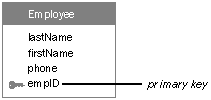 |
| Figure 58. The Employee Entity with a Primary Key
The value for a primary key may or may not represent a real-world value. The empID attribute used above may, for instance, contain the employee's social security number. Or, it may just contain an arbitrary value used only to distinguish a particular record from other employee records. An entity can contain any number of attributes that represent unique data, but only one of them needs to be declared as a primary key. Declaring more than one as a primary key creates a compound primary key.
Compound Primary Keys Typically, the primary key for an entity is a single attribute. However, you can designate a combination of attributes as a compound primary key. In a compound primary key, the value for any one of the constituent attributes isn't necessarily unique, but the combination of all of them is. For example, consider employee time cards. Every time card could be uniquely identified through a combination of its employee number and an additional time card number (to distinguish multiple cards for the same employee). Taken on their own, neither of these numbers is necessarily unique for all time cards, but the combination of the two is. Figure 59 illustrates a TimeCard entity in which the attributes empID and timeCardID form a compound primary key. |
|
| Figure 59. An Entity with a Compound Primary Key |
| Relationships |
| Your employee database might have, in addition to the Employee entity, a JobTitle entity that identifies the various job titles that an employee can have and whether each title represents a salaried or an hourly position. A relationship between the Employee entity and the JobTitle entity expresses the affinity between employees and titles, and allows you to access the title information for a given employee. Graphically, a relationship can be shown as a named arrow that points from one entity (the source entity) to another (the destination entity); the Employee-JobTitle relationship (which is named toJobTitle) is depicted in Figure 60.
Note: To support the toJobTitle relationship, the Employee entity has been altered--the titleID attribute has been added to it. This is explained in "Relationship Keys." The table that's represented by the source entity can be called the source table; the source table contains source records. Similarly, the table that's represented by the destination entity can be called the destination table; it contains destination records. Be aware that you can't just randomly create relationships between your entities. Relationships that you add to your entities must reflect real relationships between the tables in the database. For more information, see "Relationship Keys." |
| 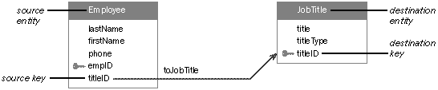 |
| Figure 60. The toJobTitle Relationship
Relationship Directionality Relationships are unidirectional. In a unidirectional relationship, the path that leads from the source to the destination can't be traveled in the opposite direction--you can't use a relationship to go from the destination to the source. For example, although you can use the toJobTitle relationship to find the title for a particular employee, you can't use it to get a list of the employees that share a particular title. Unidirectionality is enforced by the way a relationship is resolved. Specifically, the source record is a given. Resolving a relationship means finding the correct destination record (or records) given a specific source record. Bidirectional relationships--in which you can look up records in either direction--can be created by adding a separate "return-trip" relationship. This is demonstrated in "Bidirectional Relationships."
Naming Relationships It's suggested that you name your relationships "toEntity", just as the relationship drawn in Figure 60 is named toJobTitle. When defining a relationship in EOModeler, in fact, the default name generated for the relationship follows this convention. However, this convention is often sacrificed in deference to purpose. For instance, a relationship between an Employee entity and a Manager entity would be named toManager by default. Your code might be more readable, however, if you changed the relationship's name to managerOf. Correspondingly, EOModeler allows you to change the name of any relationship as needed. In the figures throughout this book, the entity that is adjacent to the relationship's label is said to own the relationship. For example, in Figure 60 the Employee entity owns the toJobTitle relationship, as indicated by the proximity of the "toJobTitle" label to the entity.
Relationships and the Data Dictionary Unlike entities and attributes, relationships don't correspond to names in the server's data dictionary. In general, most servers don't define structural elements for relationships, so their data dictionaries don't contain names to which E-R relationships can correspond. But relationships aren't completely disassociated from the data dictionary: A relationship's definition, as explained in the next section, depends on the existence of particular entities and attributes (which, as described earlier, must correspond to data dictionary names).
Relationship Keys The construction of a relationship involves more than just two entities. You also have to designate at least one attribute from each entity as a relationship key. In the toJobTitle relationship, for instance, the Employee.titleID and JobTitle.titleID are so designated; this is indicated in Figure 60 as the two attributes that lie at either end of the relationship arrow. Just as the tables are called source and destination tables, so are the relationship keys named. In the source entity, the relationship key is called the source key. The destination entity's relationship key is called the destination key. Note: As in the case of the toJobTitle relationship, the source and destination keys often have the same name, although this isn't a requirement of model design. The reason you need to designate relationship keys is so the relationship can be used to create cross-references between specific instances of the related entities (this is called "resolving" the relationship). For example, let's say you fetch an employee object. The Enterprise Objects Framework takes the value for the employee's titleID attribute and compares it to the value for titleID in each JobTitle instance. A match locates the desired job title record. For this cross-referencing scheme to work, the source and destination keys must characterize the same data--you couldn't find an employee's job title by comparing, for example, Employee.empID to JobTitle.titleID. This is why the titleID attribute was added to the Employee entity.
An Example with Data To further illustrate how a relationship is resolved, consider the "EMPLOYEE" and "JOB_TITLE" tables presented in Figure 61 (for the purpose of this example, only the essential columns are shown). Here we see that the value for the titleID attribute for James Winton is 1. Looking in the "JOB_TITLE" table, we see that 1 is the ID of the President. Thus, James Winton is the company president. Similarly, we can determine that Kai Veasey is a manager. |
| 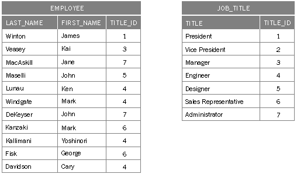 |
| Figure 61. The "EMPLOYEE" and "JOB_TITLE" Tables
Choosing Relationship Keys Any attribute can be used as a relationship key, but some are better suited than others. In general, of the two relationship keys for a particular relationship, the destination key will be a primary key for its entity (or, otherwise, an attribute that characterizes unique data) and the source key is manufactured to emulate the destination key. In traditional E-R modeling, the emulating attribute is called a foreign key. The toJobTitle relationship demonstrates this: The destination key in the JobTitle entity is titleID, the primary key for that entity. The titleID attribute is added to Employee as foreign key. Note that if empID had been used as the relationship key for the toJobTitle relationship, a given title could only be assigned to a single employee.
Compound Relationship Keys A relationship's keys needn't be single attributes from the related entities; any number of attributes can be paired as relationship keys within the same relationship to form a compound relationship key. A relationship that designates more than one pair of keys is called a compound relationship. For example, consider an entity (empPhoto) containing the employee's picture that uses the attributes firstName and lastName as a compound relationship key. (Using people's names for unique identification is generally a bad idea, but it serves the purpose for illustration. In actual practice, this relationship would likely use empID as its relationship key.) This relationship is depicted in Figure 62. |
| 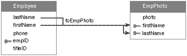 |
| Figure 62. A Compound Relationship
The algorithm used to resolve a compound relationship is similar to that for a simple relationship. The only difference is the number of pairs of relationship key values that are compared. For two records to correspond, all of the comparisons must be successful. Note: The keys in a compound relationship can be a combination of any attributes--not just a compound primary key (or foreign keys to a compound primary key). Conversely, you can use a single attribute from a compound primary key as a relationship key in a simple (non-compound) relationship.
Joins Relationships are made up of source-destination key pairs. A join is the pairing of one source attribute and one destination attribute for purposes of establishing a relationship. Thus, simple relationships consist of one join. Compound relationships are composed of two or more joins. In Figure 62, for example, the toEmpPhoto relationship is composed of two joins: one linking Employee.lastName to EmpPhoto.lastName, and one linking Employee.firstName to EmpPhoto.firstName. The Enterprise Objects Framework requires you to declare each join as either an inner join, a right outer join, a left outer join, or a full outer join. These four join semantics are defined as follows: |
| In an inner join, if a destination record can't be found for a given source record, that source record isn't included in the result of the join. Destination records that don't match up to any records in the source table are not included in the result of an inner join, either. | ||
| In a right outer join, destination records for which no source record can be found are included, but not the reverse. | ||
| In a left outer join, source records for which no destination record can be found are included, but not the reverse. | ||
| In a full outer join, all source records from both tables are included in the result of the join. |
| The Enterprise Objects Framework also lets you select one of six join operators (less than, greater than, equal to, less than or equal to, greater than or equal to, and not equal to). The join operator is used to specify how the destination attribute relates to the source attribute. Thus, you are not limited to relationships where the source and destination attributes are equal to one another. Instead, you can specify a join where, for instance, the destination is all records whose destination attribute is greater than the value of the source attribute.
Relationship Cardinality Every relationship has a cardinality; the cardinality tells you how many destination records can (potentially) resolve the relationship. The Enterprise Objects Framework defines two cardinalities, to-one and to-many: |
| In a to-one relationship, for each source record there's exactly one corresponding destination record. | ||
| In a to-many relationship, for each source record there may be zero, one, or more corresponding destination records. |
| The toJobTitle relationship is an example of a to-one relationship: An employee can only have one title. The converse relationship, from JobTitle to Employee, would be to-many: a single title can be shared by more than one employee, or there may be no employees with a given title. This relationship, which is owned by JobTitle and called toEmployee, is shown in Figure 63 (for clarity, the source and destination components are pointed out). That the relationship is to-many is indicated by the double arrowhead.
Notice that the relationship keys for the toEmployee relationship are the same as for toJobTitle. However, the source and destination key assignments are reversed. In other words, whereas Employee.titleID is the source key for the toJobTitle relationship, it's the destination key for toEmployee; similarly, JobTitle.titleID changes destination and source key roles between the two relationships. This switch does more than demonstrate that the same attributes can be used as relationship keys in more than one relationship; it also exemplifies the typical orientation of the primary key with regard to the relationship keys in to-one and to-many relationships: |
| In a to-one relationship, the destination key is always the primary key for its entity. | ||
| In a to-many relationship, the source key is usually a primary key. |
| 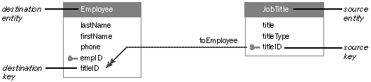 |
| Figure 63. A To-Many Relationship
Resolving a To-Many Relationship The only difference in the relationship resolution routine between a to-one and a to-many relationship is the number of destination records that are found. A to-one relationship stops when the first (and what should be the only) matching destination record is found. A to-many relationship finds all the destination records that resolve the relationship for the given source record.
Bidirectional Relationships Since relationships, as defined by the Enterprise Objects Framework, are unidirectional, it's natural to assume that to simulate a bidirectional relationship--in other words, to express the natural relationship between two entities without regard for direction--all you need is two relationships: One that leads from entity A to entity B, and one that leads from entity B to entity A. Unfortunately, it isn't always that easy. Consider, for example, the actual relationship between employees and projects. A project can involve many employees, and a single employee can contribute to more than one project. |
| 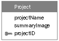 |
| Figure 64. The Project Entity
Forming a to-many relationship between Employee and Project (toProject) and a to-many relationship between Project and Employee (toEmployee) doesn't work, because it's impossible to assign relationship keys that would support this set-up. For example, in the toProject relationship you can't use the empID attribute as a source key because the destination key, Project.empID (added as a foreign key), wouldn't be atomic (since a project may consist of more than one employee). Importing projectID as a foreign key into Employee has the same problem: The attribute wouldn't be atomic (since an employee may be involved with more than one project). The most common way to establish this "many-to-many" relationship (as it's called in traditional E-R modeling) is to insert an auxiliary entity between Employee and Project, and form a network of relationships to and from it. This is depicted in Figure 65. |
| 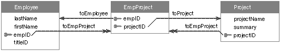 |
| Figure 65. A Many-to-Many Model
The compound primary key used in EmpProject indicates that the entity characterizes unique combinations of employees and projects. The table that the entity represents would hold a different record for each employee of every project. For example, if three employees were involved with a single project, there would be three EmpProject instances with the same value for the projectID attribute, but each record would have a different value for its empID attribute.
The Tables Behind the Many-to-Many Model To better understand how the many-to-many model works, it helps to see an example of the tables that store the data. Sample "EMPLOYEE" and "PROJECT" tables that are filled with this information are shown in Figure 66 (for clarity, only relevant attributes are shown). |
| 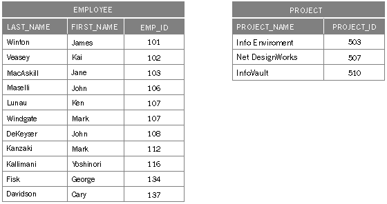 |
| Figure 66. "EMPLOYEE" and "PROJECT" Tables
The "EMP_PROJECT" table is shown in Figure 67 (for clarity, the last names and project names are shown in the margins). |
| 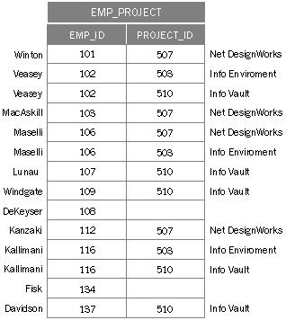 |
| Figure 67. The "EMP_PROJECT" Table
As expected, some values appear more than once for the empID attribute; similarly, some values for projectID are repeated. But since empID and projectID form a compound primary key for the EmpProject entity, no two records may possess the same combination of values for these two attributes. This fact--that no two records can have the same empID and the same ProjectID--signifies that a given employee cannot be assigned to a single project more than once.
Reflexive Relationships The source and destination entities in a relationship needn't be different. Where the entities in a relationship are the same, a reflexive relationship is created. Reflexive relationships are important in characterizing a system in which an instance of an entity points to another instance of the same entity. For example, to show who a given employee reports to, you could create a separate Manager entity. It would be easier, however, to just create a reflexive relationship, as shown in Figure 68. |
| 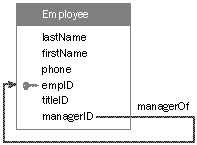 |
| Figure 68. A Reflexive Relationship
Note: The name of the relationship, managerOf, doesn't follow the relationship naming convention suggested earlier in this chapter. However, it follows from the meaning of the relationship, and meaning takes precedence over form. The managerID attribute acts as the relationship's source key; empID is the destination key. Where an employee's managerID matches another employee's empID, the first employee reports to the second. If an employee doesn't have a manager, the value for the managerID attribute is NULL in that employee's record. Reflexive relationships can represent arbitrarily deep recursions. Thus, from the model above, an employee can report to another employee who reports to yet another employee, and so on. This could go on until an employee who's managerID is NULL is reached, denoting an employee who reports to no one (probably the company president!).
Flattened Attributes At the beginning of this chapter, it was stated that an entity maps to a table in the database. This is not strictly true, however, because the Enterprise Objects Framework allows you to add flattened attributes (and flattened relationships) to your entity, effectively extending the entity's mapping to more than one table in a database. A flattened attribute is an attribute that you effectively add from one entity to another by traversing a relationship. You can't add arbitrary attributes from various entities, however. To add an attribute from one entity to another, there must be a to-one relationship between those entities. For example, by traversing the toJobTitle relationship, you can determine a given employee's title. If you add the title attribute from the JobTitle entity to the Employee entity as a flattened attribute, the Enterprise Objects Framework will automatically traverse the relationship and locate the employee's title when the employee is fetched from the database. To your code, the flattened attribute looks like any other. After adding the title attribute to the Employee entity as a flattened attribute (which has no effect on the "EMPLOYEE" table in the database), for instance, your application's view of the Employee table would look like Figure 69: |
 |
| Figure 69. A View of the "EMPLOYEE" Table After Adding a Flattened Attribute
You are not limited to flattening attributes across a single relationship; any number of relationship traversals can be employed. Thus, if there was a relationship between the JobTitle entity and a SalaryRange entity, you could include an employee's maximum salary with the rest of the employee information by flattening a toJobTitle.toSalaryRange.maxSalary attribute into the Employee entity.
Flattened Relationships Just as you can flatten an attribute to add it to another entity, so can you flatten a relationship. This gives a source entity access to relationships that a destination entity has with other entities. It is equivalent to performing a multi-table join. As an example, suppose you need department information for corporate assets that are assigned to employees, using the entities and relationships shown in Figure 70. One way to obtain the needed information is to flatten the relevant attributes (deptName and location, perhaps) across the toEmployee and toDepartment relationships. A simpler way would be to flatten the toDepartment relationship itself, so that it appears to your code as if the Department entity is a part of the Equipment entity. |
| 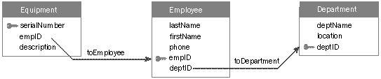 |
| Figure 70. Equipment Allocated by Department
Figure 71 shows how the Equipment entity might look after the flattened relationship had been added. In it, toDepartment is a relationship defined as toEmployee.toDepartment. When your code asks an Equipment object for the value of its toDepartment property, it receives the corresponding Department object. Your code can then query the Department object for the needed properties. |
| 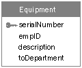 |
| Figure 71. A Flattened Relationship
While the entities involved in a flattened relationship must be related, those relationships can either be to-one or to-many. If any of the relationships are to-many and your code requests the value for a flattened relationship, it will receive an array of objects corresponding to the flattened relationship's destination entity. |